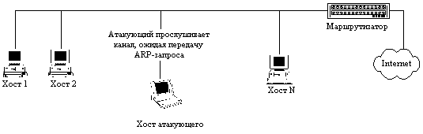
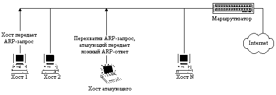
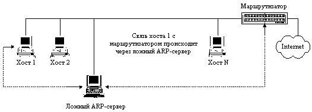
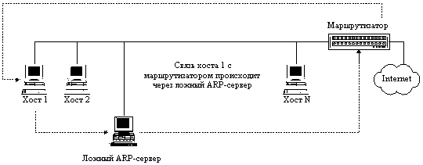

|
4.2. Ложный ARP-сервер в сети Internet
Как уже неоднократно подчеркивалось, в
вычислительных сетях связь между двумя
удаленными хостами осуществляется путем
передачи по сети сообщений, которые заключены в
пакеты обмена. В общем случае передаваемый по
сети пакет независимо от используемого
протокола и типа сети (Token Ring, Ethernet, X.25 и др.)
состоит из заголовка пакета и поля данных. В
заголовок пакета обычно заносится служебная
информация, определяемая используемым
протоколом обмена и необходимая для адресации
пакета, его идентификации, преобразования и т. д.
В поле данных помещаются либо непосредственно
данные, либо другой пакет более высокого уровня
OSI. Так, например, пакет транспортного уровня
может быть вложен в пакет сетевого уровня,
который, в свою очередь, вложен в пакет
канального уровня. Спрое-цировав это утверждение
на сетевую ОС, использующую протоколы TCP/IP, можно
утверждать, что пакет TCP (транспортный уровень)
вложен в пакет IP (сетевой уровень), который, в свою
очередь, вложен в пакет Ethernet (канальный уровень).
Следующая схема наглядно иллюстрирует как
выглядит, например, TCP-пакет в сети Internet:
| Ethernet-заголовок |
| IP-заголовок |
| TCP-заголовок |
| Данные |
|
Рис.4.2. Структура TCP-пакета
Рассмотрим схему адресации пакетов в сети Internet
и возникающие при этом проблемы безопасности.
Как известно, базовым сетевым протоколом обмена
в сети Internet является протокол IP (Internet Protocol).
Протокол IP - это межсетевой протокол, позволяющий
передавать IP-пакеты в любую точку глобальной
сети. Для адресации на сетевом уровне (IP-уровне) в
сети Internet каждый хост имеет уникальный
32-разрядный IP-адрес. Для передачи IP-пакета на хост
необходимо указать в IP-заголовке пакета в поле
Destination Address IP-адрес данного хоста. Однако, как
видно из рис. 4.2, IP-пакет находится внутри
аппаратного пакета (в случае среды передачи Ethernet
IP пакет находится внутри Ethernet-пакета), поэтому
каждый пакет в сетях любого типа и с любыми
протоколами обмена в конечном счете адресуется
на аппаратный адрес сетевого адаптера,
непосредственно осуществляющего прием и
передачу пакетов в сеть (в дальнейшем мы будем
рассматривать только Ethernet-сети).
Из всего вышесказанного видно, что для
адресации IP-пакетов в сети Internet кроме IP-адреса
хоста необходим еще либо Ethernet-адрес его сетевого
адаптера
(в случае адресации внутри одной подсети), либо
Ethernet-адрес маршрутизатора (в случае межсетевой
адресации). Первоначально хост может не иметь
информации о Ethernet-адресах других хостов,
находящихся с ним в одном сегменте, в том числе и
о Ethernet-адресе маршрутизатора. Следовательно,
перед хостом встает стандартная проблема,
решаемая с помощью алгоритма удаленного поиска.
В сети Internet для решения этой проблемы
используется протокол ARP (Address Resolution Protocol).
Протокол ARP позволяет получить взаимно
однозначное соответствие IP- и Ethernet-адресов для
хостов, находящихся внутри одного сегмента. Это
достигается следующим образом: при первом
обращении к сетевым ресурсам хост отправляет
широковещательный ARP-запрос на Ethernet-адрес
FFFFFFFFFFFFh, в котором указывает IP-адрес
маршрутизатора и просит сообщить его Ethernet-адрес
(IP-адрес маршрутизатора является обязательным
параметром, который всегда устанавливается
вручную при настройке любой сетевой ОС в сети
Internet). Этот широковещательный запрос получат все
станции в данном сегменте сети, в том числе и
маршрутизатор. Получив данный запрос,
маршрутизатор внесет запись о запросившем хосте
в свою ARP-таблицу, а затем отправит на запросивший
хост ARP-ответ, в котором сообщит свой Ethernet-адрес.
Полученный в ARP-ответе Ethernet-адрес будет занесен в
ARP-таблицу, находящуюся в памяти операционной
системы на запросившем хосте и содержащую записи
соответствия IP- и Ethernet-адресов для хостов внутри
одного сегмента. Отметим, что в случае адресации
к хосту, расположенному в той же подсети, также
используется ARP-протокол и рассмотренная выше
схема полностью повторяется.
Из п. 3.2.3.2 следует, что в случае использования в
распределенной ВС алгоритмов удаленного поиска
существует возможность осуществления в такой
сети типовой удаленной атаки "Ложный объект
РВС" . Из анализа безопасности протокола ARP
становится ясно, что, перехватив на атакующем
хосте внутри данного сегмента сети
широковещательный ARP-запрос, можно послать
ложный ARP-ответ, в котором объявить себя искомым
хостом (например, маршрутизатором), и в
дальнейшем активно контролировать и
воздействовать на сетевой трафик
"обманутого" хоста по схеме "Ложный
объект РВС" (п. 3.2.3.3).
Рассмотрим обобщенную функциональную схему
ложного ARP-сервера (рис. 4.3):
- ожидание ARP-запроса;
- при получении ARP-запроса передача по сети на
запросивший хост ложного ARP-ответа, в котором
указывается адрес сетевого адаптера атакующей
станции (ложного ARP-сервера) или тот Ethernet-адрес, на
котором будет принимать пакеты ложный ARP-сервер
(совершенно необязательно указывать в ложном
ARP-ответе свой настоящий Ethernet-адрес, так как при
работе непосредственно с сетевым адаптером его
можно запрограммировать на прием пакетов на
любой Ethernet-адрес);
- прием, анализ, воздействие и передача пакетов
обмена между взаимодействующими хостами
(воздействие на перехваченную информацию см. п.
3.2.2.3).
Рис. 4.3. Ложный ARP-сервер.

Рис. 4.3.1. Фаза ожидания ARP-запроса.

Рис. 4.3.2. Фаза атаки.

Рис. 4.3.3. Фаза приема, анализа, воздействия и передачи
перехваченной информации на ложном ARP-сервере.
Данная схема атаки требует некоторого
уточнения. На практике авторы столкнулись с тем,
что зачастую даже очень квалифицированные
сетевые администраторы и программисты не знают
либо не понимают тонкостей работы протокола ARP.
Это, наверное, связано с тем, что при обычной
настройке сетевой ОС, поддерживающей протоколы
TCP/IP, не требуется настройка модуля ARP (нам не
встречалось ни одной сетевой ОС, где обязательно
требовалось бы создание "вручную"
ARP-таблицы). Поэтому протокол ARP остается как бы
"прозрачным" для администраторов. Далее,
необходимо обратить внимание на тот факт, что у
маршрутизатора тоже имеется ARP-таблица, в которой
содержится информация об IP- и соответствующих им
Ethernet-адресах всех хостов из сегмента сети,
подключенного к маршрутизатору. Информация в эту
ARP-таблицу на маршрутизаторе также обычно
заносится не вручную, а при помощи протокола ARP.
Именно поэтому так легко в одном сегменте IP-сети
присвоить чужой IP-адрес: выдать команду сетевой
ОС на установку нового IP-адреса, потом обратиться
в сеть - сразу же будет послан широковещательный
ARP-запрос, и маршрутизатор, получив этот запрос,
автоматически обновит запись в своей ARP-таблице
(поставит в соответствии с чужим IP-адресом
Ehternet-адрес вашей сетевой карты), в результате
чего обладатель данного IP-адреса потеряет связь
с внешним миром (все пакеты, адресуемые на его
бывший IP-адрес и приходящие на маршрутизатор,
будут направляться маршрутизатором на
Ethernet-адрес атакующего). Правда, некоторые ОС
анализируют все передаваемые по сети
широковещательные ARP-запросы. Например, ОС Windows '95
или SunOS 5.3 при получении ARP-запроса с указанным в
нем IP-адресом, совпадающим с IP-адресом данной
системы, выдают предупреждающее сообщение о том,
что хост с таким-то Ethernet-адресом пытается
присвоить себе (естественно, успешно) данный
IP-адрес.
Теперь вернемся непосредственно к описанной
ранее схеме атаки "ложный ARP-сервер" . Из
анализа механизмов адресации, описанных выше,
становится ясно, что, так как поисковый ARP-запрос
кроме атакующего получит и маршрутизатор, то в
его таблице окажется соответствующая запись об
IP- и Ethernet-адресе атакуемого хоста. Следовательно,
когда на маршрутизатор придет пакет,
направленный на IP-адрес атакуемого хоста, то он
будет передан не на ложный ARP-сервер, а
непосредственно на хост. При этом схема передачи
пакетов в этом случае будет следующая:
- атакованный хост передает пакеты на ложный
ARP-сервер;
- ложный ARP-сервер передает принятый от
атакованного хоста пакет на маршрутизатор;
- маршрутизатор, в случае получения ответа на
переданный запрос, передает его непосредственно
на атакованный хост, минуя ложный ARP-сервер.

Рис. 4.3.4. Петлевая схема перехвата информации
ложным АRP-сервером.
В этом случае последняя фаза, связанная с
"приемом, анализом, воздействием и передачей
пакетов обмена" между атакованным хостом и,
например, маршрутизатором (или любым другим
хостом в том же сегменте) будет проходить уже не в
режиме полного перехвата пакетов ложным
сервером (мостовая схема), а режиме
"полупере-хвата" (петлевая схема).
Действительно, в режиме полного перехвата
маршрут всех пакетов, отправляемых как в одну,
так и в другую стороны, обязательно проходит
через ложный сервер-мост; а в режиме
"полуперехвата" маршрут пакетов образует
петлю, которую можно видеть на рисунке 4.3.4.
Необходимо обратить внимание на эту петлевую
схему перехвата информации ложным сервером, так
как в дальнейшем будут рассмотрены еще два
варианта атаки на базе протоколов DNS и ICMP,
результат которых - перехват информации по схеме
"Ложный объект РВС" , и там также может
возникнуть петлевой маршрут.
Тем не менее довольно несложно придумать
несколько способов, позволяющих функционировать
ложному ARP-серверу по мостовой схеме перехвата
(полный перехват). Например, можно, получив
ARP-запрос, самому послать такой же запрос и
присвоить себе данный IP-адрес (правда, в этом
случае ложному ARP-серверу не удастся остаться
незамеченным, так некоторые сетевые ОС (например
Windows '95 и SunOS 5.3), как отмечалось ранее, перехватив
этот запрос, выдадут предупреждение об
использовании их IP-адреса). Другой, значительно
более предпочтительный способ: послать ARP-запрос,
указав в качестве своего IP-адреса любой
свободный в данном сегменте IP-адрес, и в
дальнейшем вести работу с данного IP-адреса как с
маршрутизатором, так и с "обманутыми"
хостами (кстати, это типичная proxy-схема).
В заключении рассказа об уязвимостях протокола
ARP необходимо показать, как различные сетевые ОС
используют этот протокол для изменения
информации в своих ARP-таблицах. При исследовании
различных сетевых ОС выяснилось, что в ОС Linux 1.2.8
при адресации к хосту, находящемуся в одной
подсети с данным хостом, при отсутствии в
ARP-таблице соответствующей записи о Ethernet-адресе
передается ARP-запрос и при последующих
обращениях к данному хосту посылки ARP-запроса не
происходит. В SunOS 5.3, при каждом новом обращении к
хосту происходит передача ARP-запроса, и,
следовательно, ARP-таблица динамически
обновляется. ОС Windows '95 при обращении к хостам, с
точки зрения использования протокола ARP, ведет
себя так же, как и ОС Linux, за исключением того, что
эта операционная система периодически (каждую
минуту) посылает ARP-запрос о Ethernet-адресе
маршрутизатора (видимо, программисты фирмы Microsoft
считали, что маршрутизатор может постоянно
менять свой Ethernet-адрес?!), и в результате в течение
нескольких минут вся локальная сеть с Windows '95 с
легкостью поражается с помощью ложного
ARP-сервера. Что касается Windows NT 4.0, то эксперименты
показали, что там также используется динамически
изменяемая ARP-таблица и ARP-запросы о Ethernet-адресе
маршрутизатора передаются с периодичностью
около 10 минут.
Особый интерес вызвал следующий вопрос: а
удастся ли осуществить данную удаленную атаку на
UNIX-совместимую ОС, защищенную по классу B1
(мандатная и дискретная сетевая политики
разграничения доступа плюс специальная схема
функционирования SUID/SGID процессов), установленную
на двухпроцессорной миниЭВМ. Эта система
является одним из лучших в мире
полнофункциональных файрволов. Так вот, в
процессе анализа защищенности этого файрвола
относительно удаленных воздействий,
осуществляемых по каналам связи, при его
тестировании выяснилось, что в случае базовой
(после всех стандартных настроек) конфигурации
ОС эта защищенная UNIX-система также поражается
ложным ARP-сервером.
В заключение отметим, что, во-первых, причина
успеха данной удаленной атаки кроется, не
столько в Internet, сколько в широковещательной
среде Ethernet и, во-вторых, очевидно, что эта
удаленная атака является внутрисегментной и
поэтому представляет для вас угрозу только в
случае нахождения атакующего внутри вашего
сегмента сети. Однако, как известно из статистики
нарушений информационной безопасности
вычислительных сетей, большинство состоявшихся
взломов сетей производилось изнутри
собственными сотрудникам. Причины этого понятны.
Как подчеркивалось ранее, осуществить
внутрисегментную удаленную атаку значительно
легче, чем межсегментную. Кроме того, практически
все организации имеют локальные сети (в том числе
и IP-сети), хотя далеко не у всех локальные сети
подключены к глобальной сети Internet. Это
объясняется как соображениями безопасности, так
и необходимости такого подключения для
организации. И, наконец, сотрудникам самой
организации, знающим тонкости своей внутренней
вычислительной сети, гораздо легче осуществить
взлом, чем кому бы то ни было. Поэтому
администраторам безопасности нельзя
недооценивать данную удаленную атаку, даже если
ее источник находится внутри их локальной IP-сети.
|